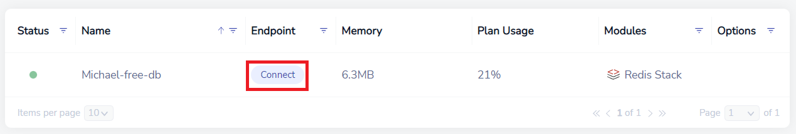
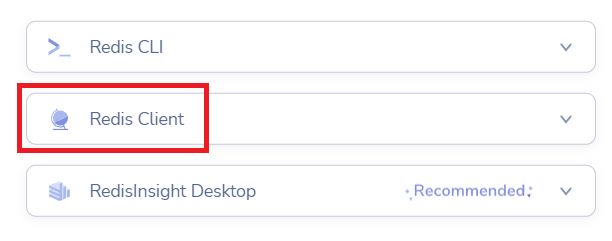
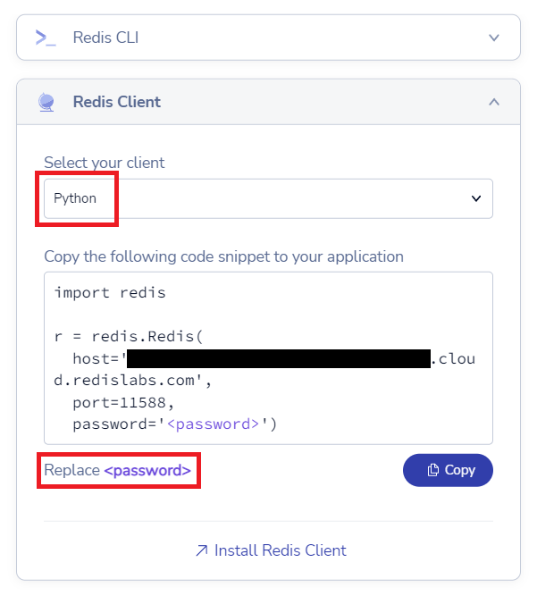
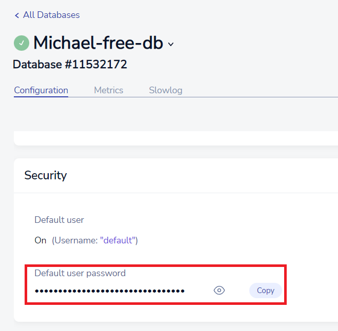

Redis
Redis is an in-memory datastore which boasts high speed data storage and access. Redis is most often used for caching frequently used data that doesn't need to be stored forever, such as client sessions for a web service. redis-py is a Python library that allows interfacing with Redis.
Note
Python3 IDE does not provide access to a locally running Redis instance. You can, however, connect to a Redis cloud database using the Python3 IDE. Redis provides a free tier for their cloud database service and you can get one by making an account with them.
We have written a short guide on how to properly set up a Redis cloud instance to work with Python3 IDE. You can check it out here:
Warning
When including private database credentials in your code, make sure you DO NOT make your project "Open Source" when you share it.
Connecting to Your Database
First, open up your Redis account and go to your database list. Here, click on the Connect button:

In the following list, click on Redis Client:

In the menu that appears, select Python as your client, then copy the code into your Python3 IDE project:

Note
If you click the Copy button above, Redis will automatically insert your database's password into the code snippet. A password is added by default when you create your database.
If you want to set your own password, you can click on your database, and scroll down you can find the Security section which includes the password Redis generated:

Make sure you don't share this password with anyone.
Congratulations! You're now ready to use your Redis cloud with Python3 IDE.
Examples
Create and Read Keys
Storing keys and values are simple with Redis. We can use the set() method to set a value in Redis:
import redis
r = redis.Redis(
host='<YOUR DATABASE>.cloud.redislabs.com',
port=11588,
password='<YOUR PASSWORD>'
)
r.set('example_key', 'example_val')
print(r.get('example_key'))
print(r.get('not_exist_key'))
Output:
b'example_val'
None
Notice two things:
- our example_val string got automatically converted to bytes
- when we attempt to access a key that doesn't exist, we get
None, not an error
Update Keys
If we want to update an existing key, we can just overwrite it:
import redis
r = redis.Redis(
host='<YOUR DATABASE>.cloud.redislabs.com',
port=11588,
password='<YOUR PASSWORD>'
)
r.set('example_key', 'val1')
print(r.get('example_key'))
r.set('example_key', 'val2')
print(r.get('example_key'))
Output:
b'val1'
b'val2'
Delete Keys
We can also delete keys with the delete() method:
import redis
r = redis.Redis(
host='<YOUR DATABASE>.cloud.redislabs.com',
port=11588,
password='<YOUR PASSWORD>'
)
r.set('example_key', 'val1')
print(r.get('example_key'))
r.delete('example_key')
print(r.get('example_key'))
Output:
b'val1'
None
Reference
- redis-py at readthedocs.io